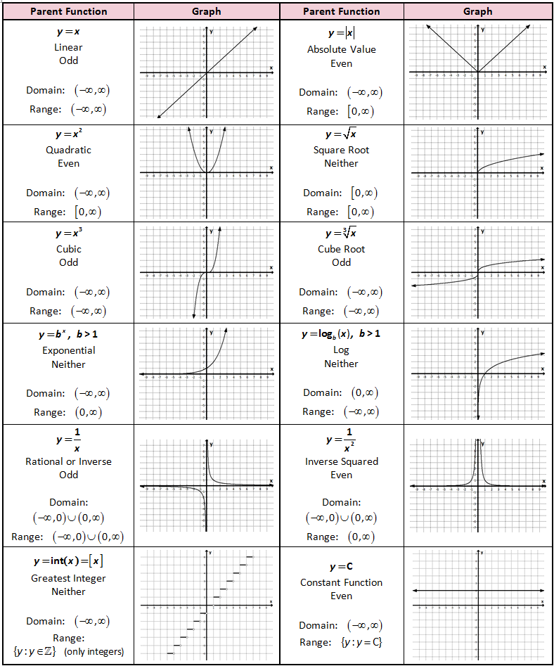
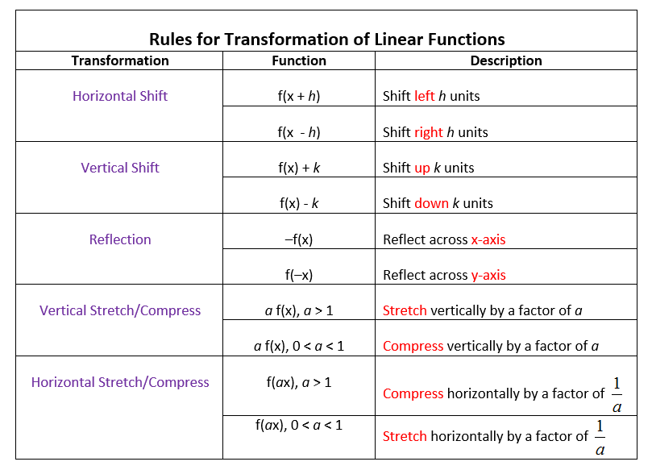

Transformation of Functions
Before we jump into the main lesson, there are some things we need to know first.
The first thing we must discuss is parent functions. A parent function is like the root of a function. For example, you may have a function: $$f\left(x\right)=\left(x+5\right)^2$$ The parent function of this would be $$f\left(x\right)=x^2$$
Below is a chart of parent functions and their graphs.
https://www.pinterest.com/pin/357965870365296899/
Now that we know about parent functions we can use them to create new functions or identify existing functions. To create these new functions, we must learn about the various transformations.
First off are horizontal shifts. If there is a number being added to x inside of parenthesis, (x+5), there is a horizontal shift left. If there is a number being subtracted from x inside of parenthesis, (x-5), there is a horizontal shift right.
Next is vertical shifts. If there is a number being added to x outside of parenthesis, x+5, there is a vertical shift up. If there is a number being subtracted from x outside the parenthesis, x-5, there is a vertical shift down.
Then there is reflections across the x-axis. If the function is negative, f(x) = -g(x), then there is a reflection across the x-axis. If the function has negative x, f(x) = g(-x), then there is a reflection accross the y-axis.
There is also vertical stretching and shrinking. If x is being multiplied by a number, such as $$4x^2$$ then there is a vertical stretch. If x is being multiplied by a fraction, such as $$1/4x^2$$ then there is vertical shrinking.
Finally there is horizontal stretching and shrinking. If x is being multiplied by a number inside parenthesis, such as $$(4x)$$ then there is a horizontal shrink. If x is being multiplied by a fraction inside parenthesis, such as $$(1/4x)$$ then there is horizontal stretching.
The chart below shows all this information.
https://www.onlinemathlearning.com/transformation-linear-functions.html
Examples
Parent Function: $$f(x) = x^2$$
Horizontal shift 5 right and Vertical shift up 2: $$f(x) = x^2$$ $$f(x) = (x-5)^2$$ $$f(x) = (x-5)^2+2$$
Parent Function: $$f(x) = |x|$$
Vertical Stretch 3 and Reflect accross the x-axis: $$f(x) = |x|$$ $$f(x) = 3|x|$$ $$f(x) = -3|x|$$
Word Problem
There is a function $$f\left(x\right)=\sqrt{x}$$ Reflect the function over the x-axis. Then, move it 4 units to the left and 3 units up.